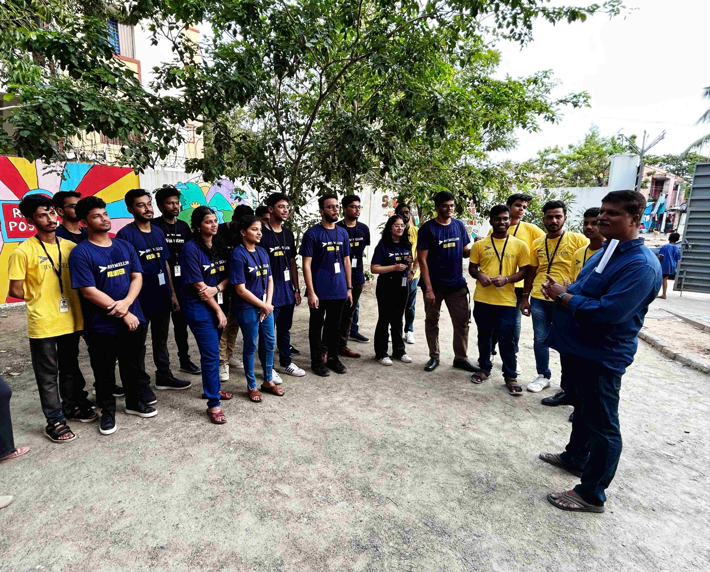
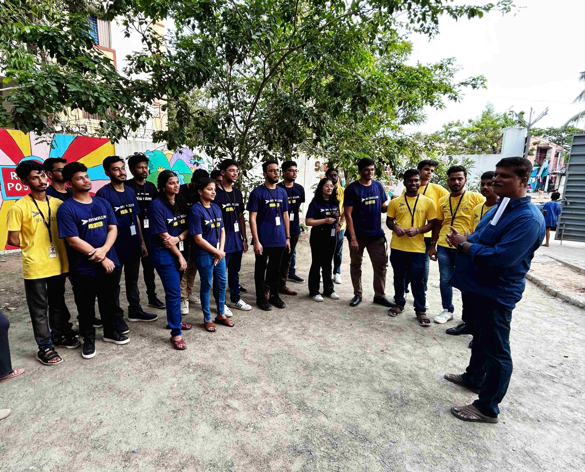

We participated in the BNY Community Impact Event 🌍✨, visiting a government school in remote area to interact with students 🎒📖 and understand their challenges.
To leave a lasting impact, we painted educational murals 🎨🏫, fostering creativity and learning. A truly meaningful experience in community and education. 💙🚀
 
